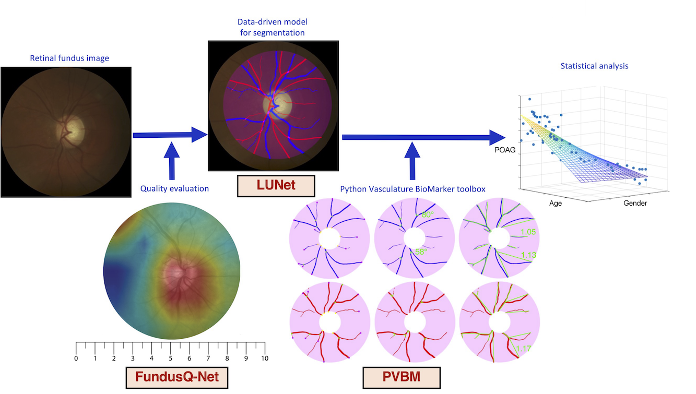

PVBM: A Python Vasculature Biomarker Toolbox Based on Retinal Blood Vessel Segmentation
Jonathan Fhima • Jan Van Eijgen • Ingeborg Stalmans • Yevgeniy Men • Moti Freiman • Joachim A. Behar
Installation
Available on pip. Run:
pip install pvbm
Vasculature Biomarkers
Digital fundus images are specialized photographs of the interior surface of the eye, capturing detailed views of the retina, including blood vessels, the optic disc, and the macula. They are invaluable tools in ophthalmology and optometry for diagnosing and monitoring various ocular diseases, including diabetic retinopathy, glaucoma, and macular degeneration.
The fundus image allows for the visualization of numerous vascular features, notably the arterioles (small arteries) and venules (small veins). Advanced image processing and machine learning techniques now enable the extraction of arterioles and venules from fundus images, a process known as A/V segmentation. By isolating these vessels, we can examine their morphology and distribution in greater detail, revealing subtle changes that might otherwise go unnoticed.
From this A/V segmentation, we can compute vasculature biomarkers, which are quantifiable indicators of biological states or conditions. By analyzing these vasculature biomarkers, healthcare professionals can gain deeper insights into a patient’s ocular health and potentially detect early signs of disease. This approach represents a promising frontier in eye care, allowing for more proactive and personalized treatment strategies.
Fifteen biomarkers have been engineered independently on the arterioles and venules segmentation, namely:
Area: This refers to the density of the blood vessels calculated as the total number of pixels in the segmentation and is expressed in square pixels (\(pixels^2\)).
Length: This represents the cumulative length of the blood vessel derived from the segmentation. It is computed as the necessary distance to traverse the entire segmentation and is expressed in pixels.
Tortuosity Index: This is a tortuosity measure based on the overall arc-chord ratio.
Median Tortuosity: This is the median value of the tortuosity distribution for all blood vessels, computed using the arc-chord ratio.
Number of Startpoints: This refers to the count of points in the segmentation that correspond to the beginning of a blood vessel outside the optic disc.
Number of Endpoints: This refers to the count of points in the segmentation that correspond to the termination of a blood vessel.
Number of Intersection Points: This is the count of points in the segmentation that correspond to an intersection within a blood vessel.
Median Branching Angle: This is the median value of the branching angle distribution for all blood vessels, and it is expressed in degrees (°).
Capacity Dimension: D0 (also known as the box-counting dimension) is a measure of the space-filling capacity of the pattern.
Entropy Dimension: D1 (also known as the entropy dimension) is a measure of the distribution of the pattern.
Correlation Dimension: D2 (also known as the correlation dimension) is a measure of the correlation of the pattern.
Singularity Length: SL represents the range of fluctuation in the fractal dimension, providing information about the complexity of local variations in the image.
Central Retinal Arteriolar Equivalent (Knudtson and Hubbard): CRAE is a summary measure of the width of retinal arterioles. This measure is used to assess the health of the retinal microvasculature.
Central Retinal Venular Equivalent (Knudtson and Hubbard): CRVE is a summary measure of the width of retinal venules. This measure helps in evaluating the condition of the retinal veins.
Arterio-Venous Ratio (Knudtson and Hubbard): The AVR is calculated using the ratios of CRAE and CRVE. This ratio is used to assess the relationship between the retinal arterioles and venules, providing insights into vascular health and potential cardiovascular risk factors. (It is not included in the tutorial but can be easily inferred by dividing the CRAE by the CRVE.)
Look at the tutorial for a code example.
Optic Disc Segmentation
We have included an optic disc segmenter to perform more accurate VBM estimation. This has been done using LUNet.
from PVBM.DiscSegmenter import DiscSegmenter
# Initialize the segmenter
segmenter = DiscSegmenter()
# Define the segmentation path and replace specific parts of the path
segmentation_path = '../PVBM_datasets/INSPIRE/artery/image13.png'
optic_disc = segmenter.segment(str(segmentation_path))
Artery/Veins Blood Vessel Segmentation Datasets
You can access the external test set used in the LUNet paper directly from PVBM: (These include Crop_HRF, INSPIRE, and UNAF.)
from PVBM.Datasets import PVBM_Datasets
path_to_save_datasets = "../PVBM_datasets"
dataset_downloader = PVBM_Datasets()
dataset_downloader.download_dataset("Crop_HRF", path_to_save_datasets)
dataset_downloader.download_dataset("INSPIRE", path_to_save_datasets)
dataset_downloader.download_dataset("UNAF", path_to_save_datasets)
print("Images downloaded successfully")
Citation
If you find this code or data to be useful for your research, please consider citing the following papers.
@inproceedings{fhima2022pvbm,
title={PVBM: a Python vasculature biomarker toolbox based on retinal blood vessel segmentation},
author={Fhima, Jonathan and Eijgen, Jan Van and Stalmans, Ingeborg and Men, Yevgeniy and Freiman, Moti and Behar, Joachim A},
booktitle={European Conference on Computer Vision},
pages={296--312},
year={2022},
organization={Springer}
}
@article{fhima2024lunet,
title={LUNet: deep learning for the segmentation of arterioles and venules in high resolution fundus images},
author={Fhima, Jonathan and Van Eijgen, Jan and Moulin-Roms{\'e}e, Marie-Isaline Billen and Brackenier, Helo{\"\i}se and Kulenovic, Hana and Debeuf, Val{\'e}rie and Vangilbergen, Marie and Freiman, Moti and Stalmans, Ingeborg and Behar, Joachim A},
journal={Physiological Measurement},
volume={45},
number={5},
pages={055002},
year={2024},
publisher={IOP Publishing}
}
@INPROCEEDINGS{10081641,
author={Fhima, Jonathan and Van Eijgen, Jan and Freiman, Moti and Stalmans, Ingeborg and Behar, Joachim A},
booktitle={2022 Computing in Cardiology (CinC)},
title={Lirot.ai: A Novel Platform for Crowd-Sourcing Retinal Image Segmentations},
year={2022},
volume={498},
number={},
pages={1-4},
keywords={Performance evaluation;Deep learning;Image segmentation;Databases;Data science;Retina;Data models},
doi={10.22489/CinC.2022.060}}
@article{abramovich2023fundusq,
title={FundusQ-Net: A regression quality assessment deep learning algorithm for fundus images quality grading},
author={Abramovich, Or and Pizem, Hadas and Van Eijgen, Jan and Oren, Ilan and Melamed, Joshua and Stalmans, Ingeborg and Blumenthal, Eytan Z and Behar, Joachim A},
journal={Computer Methods and Programs in Biomedicine},
volume={239},
pages={107522},
year={2023},
publisher={Elsevier}
}